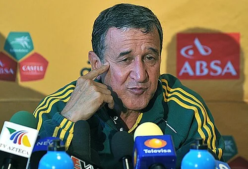

Photo source ↗Marcello Casal Jr/ABr · CC BY 3.0 br
The profile
Carlos Alberto Parreira
Carlos Alberto Parreira built a long coaching career with national teams across several continents. He took charge of Brazil for the 1994 World Cup.
Parreira held national-team coaching jobs in several countries before and after his Brazil spell. He built the 1994 side around defensive organisation and the attacking partnership of Romário and Bebeto.
Parreira guided Brazil to its fourth title in 1994. His balanced side reached the final against Italy and won the trophy after a goalless match and penalty shootout.
1994USA
Champion
Group B Brazil2 : 0Russia
- ROMÁRIO26′
- RAI52′ · pen.
Brazilhome
Starting lineup
- TAFFAREL
- JORGINHO
- RICARDO ROCHA
- MARCIO SANTOS
- MAURO SILVA
- DUNGA
- ZINHO
- RAI
- LEONARDO
- BEBETO
- ROMÁRIO
Substitutions
- 75′ALDAIR on · RICARDO ROCHA off
- 85′MAZINHO on · DUNGA off
Russiaaway
Starting lineup
- Dmitri KHARIN
- Dmitri KUZNETSOV
- Sergei GORLUKOVICH
- Yuri NIKIFOROV
- Vladislav TERNAVSKI
- Dmitri KHLESTOV
- Andrei PIATNITSKI
- Valeri KARPIN
- Ilia TSYMBALAR
- Dmitri RADCHENKO
- Sergei YURAN
Substitutions
- 55′Oleg SALENKO on · Sergei YURAN off
- 77′Aleksandr BORODYUK on · Dmitri RADCHENKO off
Group B Brazil3 : 0Cameroon
- ROMÁRIO39′
- MARCIO SANTOS66′
- BEBETO73′
Brazilhome
Starting lineup
- TAFFAREL
- JORGINHO
- ALDAIR
- MARCIO SANTOS
- MAURO SILVA
- DUNGA
- ZINHO
- RAI
- LEONARDO
- BEBETO
- ROMÁRIO
Substitutions
- 75′PAULO SERGIO on · ZINHO off
- 81′MULLER on · RAI off
Cameroonaway
Starting lineup
- Joseph Antoine BELL
- Rigobert SONG
- Raymond KALLA
- Stephen TATAW
- Hans AGBO
- Thomas LIBIIH
- Emile MBOUH
- Louis MFEDE
- Marc-Vivien FOE
- Francois OMAM-BIYIK
- David EMBE
Substitutions
- 64′Roger MILLA on · David EMBE off
- 72′Emmanuel MABOANG on · Louis MFEDE off
Group B Brazil1 : 1Sweden
- ROMÁRIO46′
- Kennet ANDERSSON23′
Brazilhome
Starting lineup
- TAFFAREL
- JORGINHO
- ALDAIR
- MARCIO SANTOS
- MAURO SILVA
- DUNGA
- ZINHO
- RAI
- LEONARDO
- BEBETO
- ROMÁRIO
Substitutions
- 45+1′MAZINHO on · MAURO SILVA off
- 83′PAULO SERGIO on · RAI off
Swedenaway
Starting lineup
- Thomas RAVELLI
- Roland NILSSON
- Patrik ANDERSSON
- Roger LJUNG
- Pontus KAMARK
- Stefan SCHWARZ
- Klas INGESSON
- Jonas THERN
- Henrik LARSSON
- Tomas BROLIN
- Kennet ANDERSSON
Substitutions
- 64′Jesper BLOMQVIST on · Henrik LARSSON off
- 75′Hakan MILD on · Stefan SCHWARZ off
Round of 16 Brazil1 : 0United States
- BEBETO72′
Brazilhome
Starting lineup
- TAFFAREL
- JORGINHO
- ALDAIR
- MARCIO SANTOS
- MAURO SILVA
- DUNGA
- ZINHO
- LEONARDO
- MAZINHO
- BEBETO
- ROMÁRIO
Substitutions
- 68′CAFU on · ZINHO off
United Statesaway
Starting lineup
- Tony MEOLA
- Thomas DOOLEY
- Marcelo BALBOA
- Paul CALIGIURI
- Fernando CLAVIJO
- Alexi LALAS
- Hugo PEREZ
- Tab RAMOS
- Cobi JONES
- Michael SORBER
- Earnie STEWART
Substitutions
- 45′Eric WYNALDA on · Tab RAMOS off
- 66′Roy WEGERLE on · Hugo PEREZ off
Quarterfinal Netherlands2 : 3Brazil
- Dennis BERGKAMP64′
- Aron WINTER76′
- ROMÁRIO53′
- BEBETO63′
- BRANCO81′
Netherlandshome
Starting lineup
- Ed DE GOEY
- Ronald KOEMAN
- Stan VALCKX
- Frank RIJKAARD
- Rob WITSCHGE
- Jan WOUTERS
- Wim JONK
- Aron WINTER
- Marc OVERMARS
- Dennis BERGKAMP
- Peter VAN VOSSEN
Substitutions
- 54′Bryan ROY on · Peter VAN VOSSEN off
- 64′Ronald DE BOER on · Frank RIJKAARD off
Brazilaway
Starting lineup
- TAFFAREL
- JORGINHO
- BRANCO
- ALDAIR
- MARCIO SANTOS
- MAURO SILVA
- DUNGA
- ZINHO
- MAZINHO
- BEBETO
- ROMÁRIO
Substitutions
- 80′RAI on · MAZINHO off
- 89+59′CAFU on · BRANCO off
Semifinal Sweden0 : 1Brazil
- ROMÁRIO80′
Swedenhome
Starting lineup
- Thomas RAVELLI
- Roland NILSSON
- Patrik ANDERSSON
- Joachim BJORKLUND
- Roger LJUNG
- Klas INGESSON
- Jonas THERN
- Hakan MILD
- Martin DAHLIN
- Tomas BROLIN
- Kennet ANDERSSON
Substitutions
- 67′Stefan REHN on · Martin DAHLIN off
Brazilaway
Starting lineup
- TAFFAREL
- JORGINHO
- BRANCO
- ALDAIR
- MARCIO SANTOS
- MAURO SILVA
- DUNGA
- ZINHO
- MAZINHO
- BEBETO
- ROMÁRIO
Substitutions
- 45+1′RAI on · MAZINHO off
Final Brazil0 : 0Italy
Brazilhome
Starting lineup
- TAFFAREL
- JORGINHO
- BRANCO
- ALDAIR
- MARCIO SANTOS
- MAURO SILVA
- DUNGA
- ZINHO
- MAZINHO
- BEBETO
- ROMÁRIO
Substitutions
- 21′CAFU on · JORGINHO off
- 106′VIOLA on · ZINHO off
Italyaway
Starting lineup
- Gianluca PAGLIUCA
- Antonio BENARRIVO
- Paolo MALDINI
- Franco BARESI
- Roberto MUSSI
- Demetrio ALBERTINI
- Dino BAGGIO
- Nicola BERTI
- Roberto DONADONI
- Roberto BAGGIO
- Daniele MASSARO
Substitutions
- 34′Luigi APOLLONI on · Roberto MUSSI off
- 95′Alberico EVANI on · Dino BAGGIO off